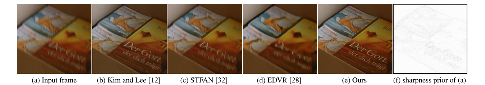
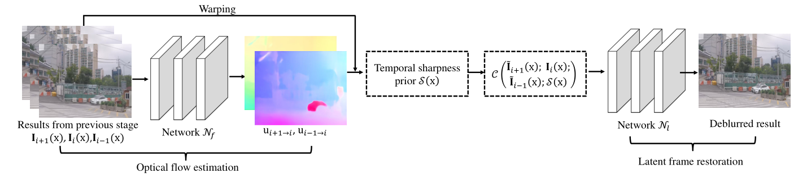
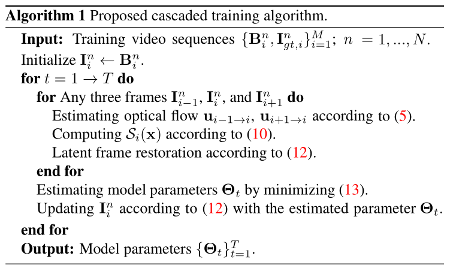
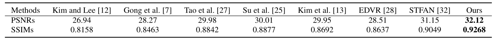
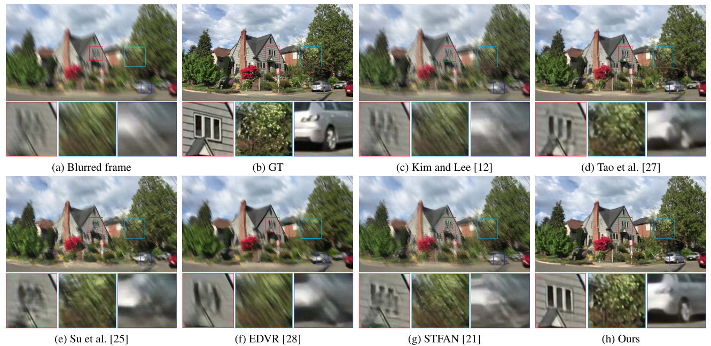

Jinshan Pan, Haoran Bai, Jinhui Tang

We present a simple and effective deep convolutional neural network (CNN) model for video deblurring. The proposed algorithm mainly consists of optical flow estimation from intermediate latent frames and latent frame restoration steps. It first develops a deep CNN model to estimate optical flow from intermediate latent frames and then restores the latent frames based on the estimated optical flow. To better explore the temporal information from videos, we develop a temporal sharpness prior to constrain the deep CNN model to help the latent frame restoration. We develop an effective cascaded training approach and jointly train the proposed CNN model in an end-to-end manner. We show that exploring the domain knowledge of video deblurring is able to make the deep CNN model more compact and efficient. Extensive experimental results show that the proposed algorithm performs favorably against state-of-the-art methods on the benchmark datasets as well as real-world videos.
@inproceedings{CDVD-TSP,
title={Cascaded Deep Video Deblurring Using Temporal Sharpness Prior},
author={Pan, Jinshan and Bai, Haoran and Tang, Jinhui},
booktitle={IEEE Conference on Computer Vision and Pattern Recognition},
year={2020}
}
Most conventional methods estimate the latent image and optical flow by iteratively minimizing their object functions during the optimization process. We note that alternatively optimizing the estimation of latent image and optical flow is able to remove blur, because optical flow estimation can gain the information from latent frames during alternatively optimizing. However, the deblurring performance mainly depends on the choice of constraints on latent image and optical flow, and it is not trivial to determine proper constraints. In addition, the commonly used constraints usually lead to highly non-convex objective functions which are difficult to solve.
We further note that most deep CNN-based methods directly estimate the sharp videos from blurred input and generate promising results by an end-to-end manner. However, they estimate the warping functions from blurred inputs instead of latent frames and do not explore the domain knowledge of video deblurring, which are less effective for the videos with signifi cant blur effect.
To overcome these problems, we develop an effective algorithm which makes full use of the well-established principles in the variational model-based methods and explores the domain knowledge to make deep CNNs more compact for video deblurring.
The proposed algorithm contains the optical flow estimation module, latent image restoration module, and the temporal sharpness prior.

As demonstrated in [4], the blur in the video is irregular, and thus there exist some pixels that are not blurred. Following the conventional method [4], we explore these sharpness pixels to help video deblurring. The sharpness prior is defined as: \[ S_i(x) = exp(-\frac{1}{2} \sum_{j\&j\neq0}D(I_{i+j}(x+u_{i+j \rightarrow i}); I_i(x))) \tag{10} \] where \( D(I_{i+j}(x+u_{i+j \rightarrow i}); I_i(x)) \) is defined as \( \left \| I_{i+j}(x+u_{i+j \rightarrow i} - I_i(x) \right \|^2 \).
Based on (10), if the value of \( S_i(x) \) is close to 1, the pixel \(x\) is likely to be clear. Thus, we can use \( S_i(x) \) to help the deep neural network to distinguish whether the pixel is clear or not so that it can help the latent frame restoration. To increase the robustness of \( S_i(x) \), we define \( D(.) \) as: \[ D(I_{i+j}(x+u_{i+j \rightarrow i}); I_i(x)) = \sum_{y\in \omega(x)} \left \| I_{i+j}(x+u_{i+j \rightarrow i} - I_i(x) \right \|^2 \tag{11} \] where \( \omega(x) \) denotes an image patch centerd at pixel \( x \).
As the proposed algorithm estimates optical flow from intermediate latent frames as the motion blur information, it requires a feedback loop. To effectively train the proposed algorithm, we develop a cascaded training approach and jointly train the proposed model in an end-to-end manner. The main steps of the cascaded training approach is as follows, where T denotes the number of stages:

Quantitative evaluations on the video deblurring dataset [25] in terms of PSNR and SSIM. All the comparison results are generated using the publicly available code. All the restored frames instead of randomly selected 30 frames from each test set [25] are used for evaluations.

Deblurred results on the test dataset [25]. The deblurred results in (c)-(g) still contain significant blur effects. The proposed algorithm generates much clearer frames.

If you have any question, please contact us at: